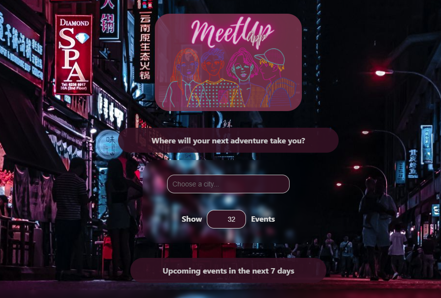

Description
MeetUp application created by create-react-app, utilizing the MeetUp API.
The aim of this project was to learn different ways of testing and included aspects of both Test-Driven Development and Behavior-Driven Development:
- Unit Testing
- Integration Testing
- Acceptance Testing
- End-to-End Testing.
The app was built into a Progressive Web Application (PWA).
During the process, it required gaining experience with Continuous Delivery and Object-Oriented Programming.
The app has offline availability and includes data visualisation (number of events).
This project was part of the CF Full-Stack Web Development course.
Planned updates
- styling updates
- pie chart placement